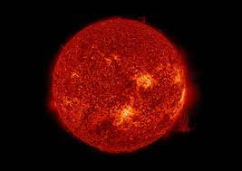

YELLOW DWARF STAR
A yellow dwarf star is a type of main sequence star, more properly called a G-type main sequence star. Earth's Sun is a typical example of this type of star. This type of star has 80-120% of the mass of the Earth's Sun.

RED DWARF STAR
Red dwarfs burn slowly, meaning they can live for a long time, relative to other star types. The closest star to earth (Proxima Centauri), is a Red dwarf. Red dwarfs include the smallest of the stars in the universe.